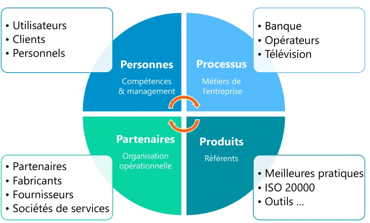
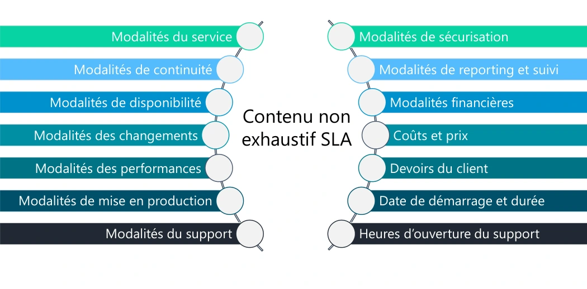
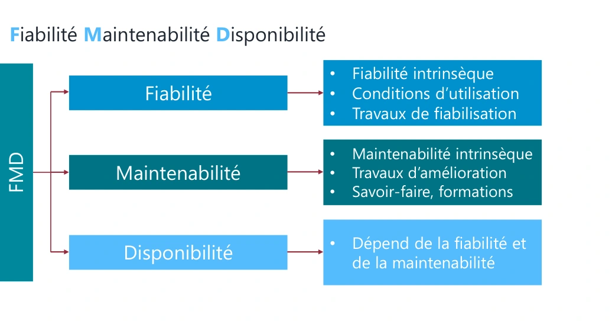
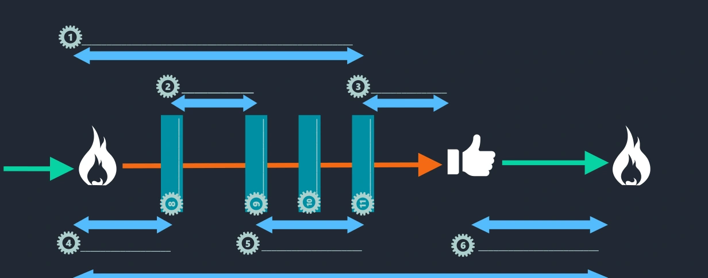

Module 03 – Les publications centrales « Stratégie et Conception des services »
Objectifs
Connaitre le rôle de la stratégie des services
Connaitre les processus de la stratégie des services
Connaitre le rôle de la conception des services
Connaitre les processus de la stratégie des services
Définir le contenu d’un SLA (Service Level Agrement)
Page 2
Les publications centrales
« Stratégie des services »
La stratégie des services
Objectifs
Comment développer l’offre de service dans un contexte concurrentiel ?
Comment passer de la gestion des services à un rôle stratégique de la DSI pour l’entreprise ?
Comment apporter de la valeur aux clients ?
Son rôle
Produire des services de qualité apportant de la valeur aux clients en prévoyant les conflits possibles
Planifier et définir une stratégie des services (services offerts)
Rester proche des demandes métiers en restant concurrentiel
Page 3
Les processus de la stratégie des services
La gestion de la stratégie
Il permet l’établissement de la stratégie des services en fonction de l’état du marché, des demandes (clients), des offres (concurrence) et des capacités de l’entreprise (personnel, matériel, financière)
La gestion du portefeuille des services
Il liste tous les services (futurs, actuels, retirés) et leur description (coût)
Les services actuels sont contenus dans le catalogue des services (clients)
La gestion des demandes
C’est un des processus les plus critiques
Permet d’analyser les besoins des clients, actuels et surtout futurs, en fonction des évolutions des métiers et des technologies
La gestion financière
Permet d’analyser les coûts d’un service afin d’en définir le prix
La gestion de la relation métier
Maintient une relation de confiance avec les clients pour garantir la satisfaction générale ressentie
Page 4
Les 4 « P »
Stratégie des services : les quatre P
Les quatre P
Repères associés
Positionnements (Positions)
Politiques et éléments différenciateurs
Perspective (Perspective)
Vision et mission
Plans (Plans)
Méthode et exécution
Pérennisation (Patterns)
Décisions et actions consistantes dans la durée
Les acteurs
La direction de l’entreprise
Donner des directions
Définir des politiques
Identifier les projets
Attribuer les ressources
La direction financière
Prioriser les investissements
Terminologie
ROI (Return On Investment) : retour sur investissement, comparaison de la dépense par rapport à la valeur produite et sur quelle durée
TCO (Total Cost of Ownership) : coût total de possession, ensemble des coûts de fourniture des services
Coût d’un service : argent dépensé pour concevoir ou fournir un service
Coûts directs : achat de matériels ou de fournitures (facture)
Coûts indirects : frais par rapport à l’entreprise (location des locaux)
Coûts cachés (inclus dans le TCO) : manque de formation des techniciens
Prix d’un service : le coût augmenté d’une marge
Page 5
Les publications centrales « Conception des services »
La conception des services
Objectif
Produire des services en respectant les livrables produits par la stratégie des services
Son rôle
Recueillir les exigences du client (SLR)
Définir la solution
Connaître les contraintes de l’architecture du système d’information
Définir les processus
Définir les indicateurs de mesure du service
Page 6
La conception des services : définir la solution
Exigences, contraintes, spécifications, validité et bénéfices : où je dois aller?
Options de réalisation : comment vais-je m’y prendre ?
Réalisation interne ou sous-traitance ?
Maintenance corrective interne ou externe (TMA) ?
Exploitation interne ou infogérance ?
Sous-traitance fonctionnelle (BPO) ?
ASP : fournir le service directement au client final via l’infrastructure de l’informatique d’un fournisseur ?
KPO : appel à un ou plusieurs consultants externes pour leurs connaissances sur les métiers ou la technologie ?
La conception des services : indicateurs
Comment évoluent les données du service ?
Fait-il ce qu’on a vendu au client ?
Le fait-il dans le respect des SLA ?
Sommes-nous efficients dans la livraison quotidienne du service ?
Page 7
Les processus de la conception des services
La coordination de la conception
Met en relation les différents processus pour la création des services
La gestion du catalogue des services
Pour gérer et garder à jour les informations des services et leur disponibilité
La gestion des niveaux de services (SLA) *
Dans la matrice RACI, elle est « accountable »
Permet d’identifier les exigences, les besoins et les moyens nécessaires à la fourniture des services
* Processus détaillé dans les diapositives suivantes
La gestion de la disponibilité *
S’assure que les niveaux de disponibilité d’un service sont conformes aux SLA
Permet aussi de supprimer les SPOF (Single Point Of Failure)
La gestion de la capacité
S’assure que les services actuels et futurs sont et seront délivrés au meilleur coût (ressources humaines et/ou matérielles)
Elle contient trois sous-processus :
BCM (Business Capacity Management) – Gestion de la capacité orientée métier – Futurs besoins
SCM (Service Capacity Management) – Gestion de la capacité orientée service – Performances actuelles
CCM (Component Capacity Management) – Gestion de la capacité des composants – Ressources disponibles
* Processus détaillé dans les diapositives suivantes
Page 8
Les processus de la conception des services
La gestion de la continuité
S’assure de la poursuite de la livraison des services dans le respect des SLA dans un environnement dégradé (côté DSI et/ou client)
Nécessite de tester régulièrement et adapter les PCA
La gestion de la sécurité
S’assure de la sécurité des données du système d’information
Nécessite de définir la politique d’utilisation du système d’information
La gestion des fournisseurs *
Codifie la relation avec les fournisseurs (recrutement, contrat, niveau et qualité de service, litiges, ruptures de contrat)
* Processus détaillé dans les diapositives suivantes
Les acteurs de la conception des services « 4P »

Les quatre P de la conception — illustration isolée du support, page 8.
Personnes
Utiliser les meilleures ressources internes
Processus
Créer, définir et faire évoluer les processus et les procédures en fonction de leur utilisation par les services
Produits
Choisir des produits adaptés aux services
Partenaires
Sélectionner et impliquer les sous-traitants et les fournisseurs spécialisés dans un domaine (apport de personnels, de savoir- faire et de compétences)
Page 9
La gestion des niveaux de services

Contenu non exhaustif d’un SLA — illustration isolée du support, page 9.
Le contenu d’un OLA
Un contrat de services OLA est un contrat pour réaliser un SLA
Le document a la même structure que le SLA
L’OLA est un contrat interne, les conditions de pénalités sont souvent inexistantes ou non applicables
Le contenu d’un UC
Un contrat de service UC est un contrat avec un prestataire externe pour réaliser un SLA
Le document a la même structure que le SLA
Des clauses juridiques sont à ajouter pour traiter la relation entre les deux organisations
Page 10
La gestion des niveaux de services : terminologie
SLR – Service Level Requirement : expression des besoins de client
SLM – Service Level Manager : responsable de la gestion des niveaux de services
SLA – Service Level Agreement : accord de niveaux de services conclu avec le client
OLA – Operationnal Level Agreement : accord de niveaux de services conclu avec les fournisseurs internes
UC – Underpinning Contract : contrat de sous-traitance
Catalogue de services : document regroupant l’ensemble des services
SIP – Service Improvement Program : programme d’amélioration des services
TMA - Tierce Maintenance Applicative : maintenance corrective applicative effectuée par un tiers (développement).
BPO - Business Process Outsourcing : sous-traitance fonctionnelle d’une application, d’un processus métier (la paie, la comptabilité).
ASP - Application Service Provision : fournir le service directement au client final via l’infrastructure de l’informatique d’un fournisseur
KPO - Knowledge Process Outsoursing : appel à un ou plusieurs consultants externes pour leurs connaissances sur les métiers ou la technologie
Page 11
La gestion de la disponibilité

Fiabilité, maintenabilité, disponibilité — illustration isolée du support, page 11.
La gestion de la disponibilité : terminologie
Fiabilité : aptitude d’un équipement, d’un logiciel, d’un service à fonctionner durablement avec un nombre minimum d’interruptions ou d’incidents
Maintenabilité : aptitude d’un service ou d’un équipement à être remis en marche
Résilience : aptitude à continuer à fonctionner même si un ou plusieurs composants sont hors service
Service-ability : aptitude que l’on a à trouver des fournisseurs ou sous-traitants externes pour assurer disponibilité, fiabilité et maintenabilité
Recoverability : aptitude à s’auto reconfigurer jusqu’au dernier niveau d’avant arrêt
Page 12
La gestion de la continuité : terminologie
Business Continuity Plan (Plan de Continuité d’Activité en français) : orienté métier, quelles sont les activités opérationnelles et leurs ressources, que vais-je maintenir ?
Business Continuity Managment : analyse et gestion, quels sont les risques et leurs impacts ?
Business Impact Analysis : méthode d’analyse de l’impact business qui permet d’évaluer les pertes potentielles.
Disaster Recovery Plan (Plan de Reprise d’Activité en français) : plan de rétablissement et reprise informatique.
La gestion des fournisseurs
Organisation externe à l’entreprise qui va intervenir dans la fourniture d’un service sous contrat de sous-traitance (UC, Underpinning Contract)
Plusieurs relations possibles :
Sous-traitance : organisation externe qui s’engage pour la conception, le développement, l’exploitation et la maintenance d’un service.
Cotraitance : organisation externe qui s’engage à participer à des activités du cycle de vie du service.
Partenariat : engagement à long terme pour de nouvelles opportunités.
Application Service Provision (ASP) : fourniture partielle ou totale d’un service à partir de son propre SI et de son réseau.
Page 13
La gestion de la sécurité : terminologie
La disponibilité des données : c’est donner à l’utilisateur qui le demande l’information dont il a besoin.
La confidentialité : c’est rendre accessible l’information à ceux qui en ont l’autorisation et à eux seuls.
L’authenticité : c’est rendre fiables les échanges par une signature électronique.
L’intégrité : c’est s’assurer que l’information est complète et qu’elle n’a pas été altérée de manière frauduleuse.
La non-répudiation : c’est assumer le fait d’avoir effectué l’action.
La gestion de la disponibilité : taux

Repères numérotés du taux de disponibilité : partie principale — illustration isolée du support, page 13.Repères numérotés du taux de disponibilité : intervalles inférieurs — illustration isolée du support, page 13.